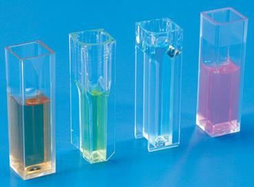

Le spectrophotomètre
Le spectrophotomètre est l'un des principaux appareils du laboratoire, en diagnostic comme en recherche. Il met la loi de Beer-Lambert en pratique : choisir une longueur d'onde, faire traverser l'échantillon, mesurer ce qui ressort. Chaque élément de l'appareil a son rôle, et chacun a ses précautions.
Définition et usage
La lumière émise par une lampe passe par un dispositif qui sélectionne une longueur d'onde déterminée, puis traverse l'échantillon. L'intensité qui sort est capturée et comparée à celle qui est entrée. Le spectrophotomètre sert à déterminer la présence ou la concentration d'une substance dans une solution : analyse qualitative ou quantitative.


Les éléments
- Source lumineuse : lampe au tungstène pour le visible (350 à 800 nm) ; lampe à arc au deutérium pour l'ultraviolet (190 à 400 nm) ; certains fabricants utilisent des lampes au xénon de longue durée, en lumière pulsée, dans le visible et l'UV.
- Monochromateur : disperse la lumière blanche en radiations de différentes longueurs d'onde, dont une seule sert à la lecture. Il a une fente d'entrée, un jeu de miroirs, un élément qui sépare les radiations (dispersion par un prisme, ou diffraction par un réseau ou un cristal) et une fente de sortie, dont la position sur le spectre étalé choisit la longueur d'onde.
- Porte-échantillons : en général une cuve rectangulaire, en plastique ou en verre pour le visible, en quartz pour l'UV (220 et 340 nm) ; il existe aussi des cuves et des microplaques à usage unique en plastique (styrène, polystyrène, en ELISA).
- Système détecteur : transforme la lumière transmise en signal électrique. Photodiode : un photon crée une paire électron-trou dans un semi-conducteur, leur nombre suit la quantité de lumière. Barrette de diodes : mesure simultanée sur tout le spectre ; une barrette CCD aligne de petites photodiodes (14 µm × 14 µm). Photomultiplicateur : le photon arrache un électron à la cathode, qui est accéléré vers des dynodes et en arrache d'autres ; jusqu'à \(10^{6}\) électrons sur l'anode pour un électron arraché.
- Système de lecture : les lectures analogiques sont beaucoup moins précises que les lectures numériques.
Simple ou double faisceau
Simple faisceau : un seul trajet, de la source au détecteur, à travers la cuve. Double faisceau : un système diviseur (miroir tournant ou vibrant) envoie la lumière alternativement à travers la référence et à travers l'essai, et le même photodétecteur les reçoit tour à tour.
Installation
Alimentation électrique aux normes nationales (220 à 230 V, 50/60 Hz) ; environnement propre, sans poussière ; table stable, à l'écart des appareils qui vibrent (centrifugeuses, agitateurs).
Entretien
| Fréquence | Opérations |
|---|---|
| Une fois par an | Inspection de l'environnement : prise reliée à la terre, en bon état, à moins de 1,5 m de l'appareil ; tension à moins de 5 % de celle de la plaque de l'appareil. |
| Tous les six mois | Inspection visuelle de l'état et de l'intégrité des éléments. |
| Entretien général | Cuves en quartz : laver avec une solution alcaline diluée (NaOH 0,1 M) et un acide dilué (HCl 0,1 M), rincer plusieurs fois à l'eau distillée. Piles de la mémoire (date, heure). Lampe : consommable à durée de vie limitée. |
| Préventif | Nettoyer l'extérieur ; inspecter le câble ; vérifier la lampe et le fusible ; allumer et laisser chauffer 5 minutes, vérifier voyants, zéro, source ; tests de courant de fuite, de terre et de polarité. |
Bonnes pratiques
- Étalonner à chaque nouvelle série d'échantillons.
- Fermer le couvercle du porte-échantillons pendant la mesure.
- Ne pas réutiliser les cuves à usage unique.
- Uniquement des cuves en quartz en dessous de 310 nm.
- Pas de cuves en plastique avec des solvants organiques.
- Préparer les étalons dans de la verrerie en verre borosilicaté de qualité supérieure.
À retenir
Source, monochromateur, porte-échantillons, détecteur, lecture.
Tungstène : visible, 350 à 800 nm. Deutérium : UV, 190 à 400 nm. Quartz obligatoire sous 310 nm.
Photodiode, barrette de diodes (CCD), photomultiplicateur (jusqu'à \(10^{6}\) électrons par électron arraché).
Prise à moins de 1,5 m, tension à ± 5 % ; inspection de l'environnement une fois par an, visuelle tous les six mois.